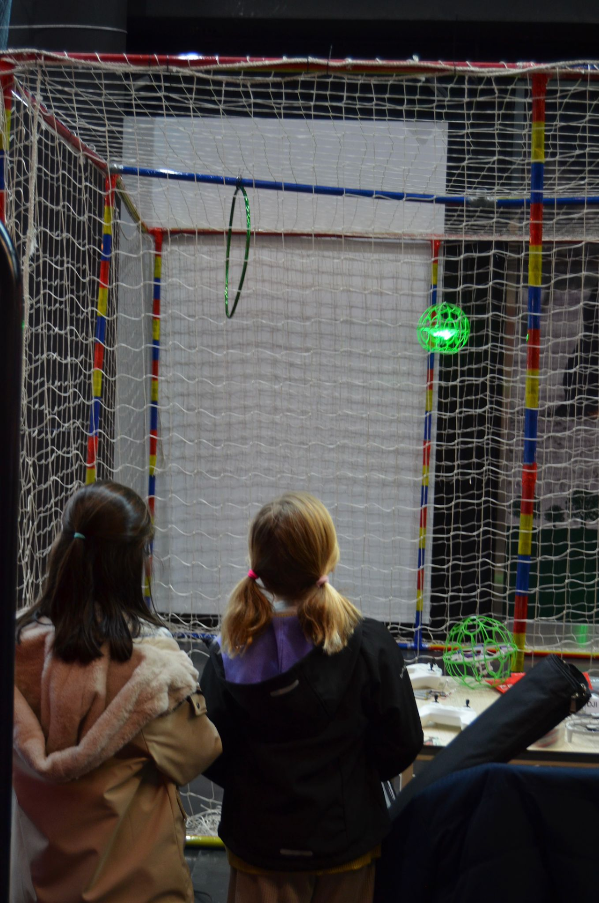
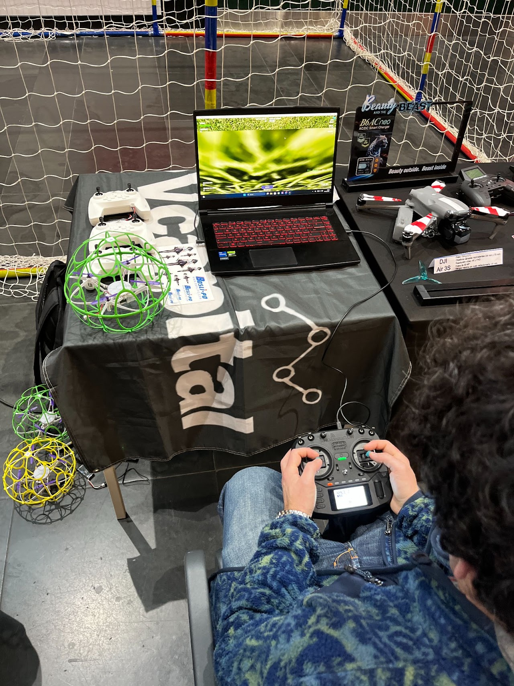
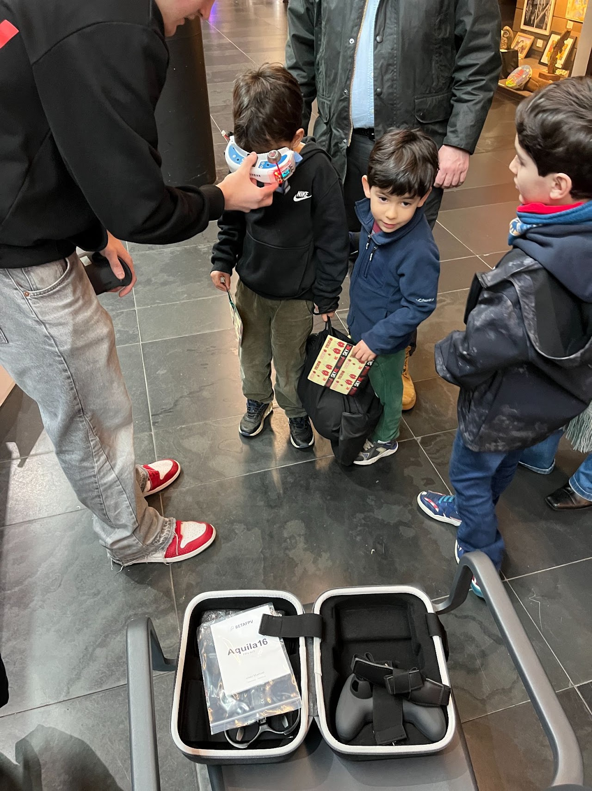
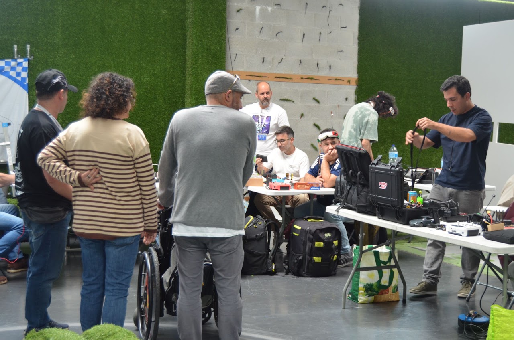
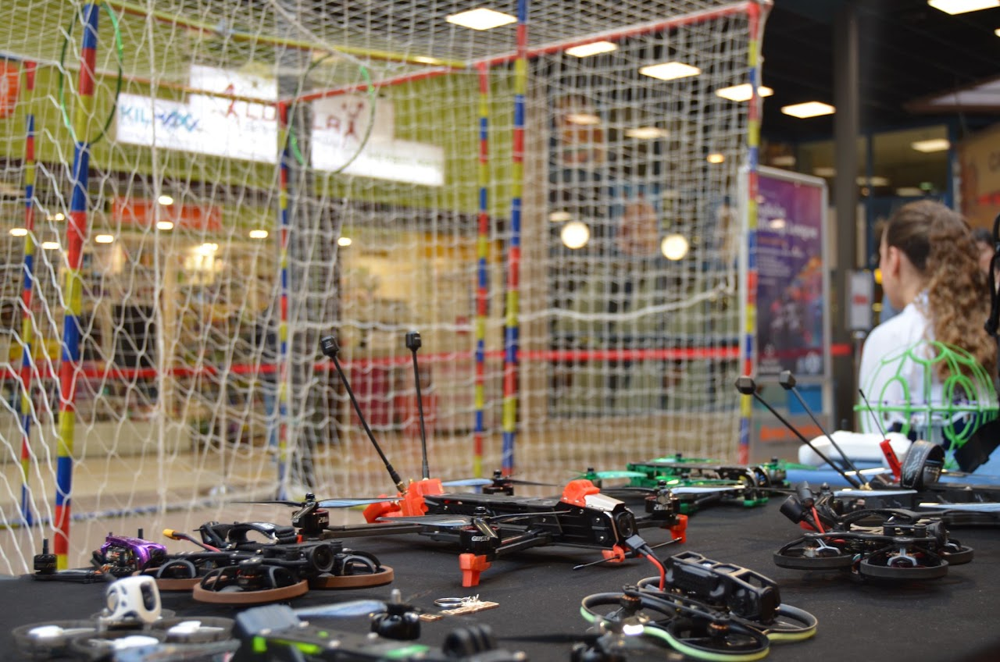

EXPERIENCIA GALICIA WHOOP LEAGUE
MUCHO MÁS QUE CARRERAS.
Acercamos el mundo de los drones y el FPV al público mediante actividades participativas, tecnología, competición y experiencias para todas las edades.
PARTICIPA · DESCUBRE · VUELA
AQUÍ EL PÚBLICO TAMBIÉN PILOTA.
La Galicia Whoop League transforma cada evento en una experiencia alrededor del mundo FPV.
Mientras los pilotos compiten, el público puede descubrir cómo funcionan los drones, probar simuladores, experimentar el vuelo FPV y ponerse a los mandos de drones reales.

EXPERIENCIA INTERACTIVA
DRONE SOCCER.
Una de las actividades más participativas de nuestros eventos. El público puede ponerse a los mandos de drones protegidos y descubrir el pilotaje de una forma divertida y accesible.
Niños, jóvenes y adultos pueden probar la experiencia sin necesidad de haber pilotado previamente.

ZONA GAMING
SIMULADORES FPV.
Una primera toma de contacto con el pilotaje FPV utilizando emisoras reales y simuladores de vuelo.
El visitante puede aprender los controles básicos, intentar completar un circuito y descubrir cómo se siente pilotar un dron de carreras.

EXPERIENCIA INMERSIVA
VIVE EL FPV.
El público puede ponerse unas gafas FPV y ver en primera persona exactamente lo mismo que está viendo uno de los pilotos durante la carrera.
Una forma completamente diferente de vivir la competición y entender la velocidad y precisión necesarias para pilotar estos drones.

APRENDE FPV
TALLERES DE DRONES.
Acercamos la tecnología FPV al público explicando cómo funciona un dron de carreras y cuáles son sus principales componentes.
Motores, cámaras, baterías, controladoras, emisoras y sistemas de vídeo dejan de ser algo desconocido para convertirse en tecnología que se puede ver, tocar y comprender.

EXPOSICIÓN
DESCUBRE LOS DRONES.
Una zona donde descubrir diferentes tipos de drones, componentes y equipamiento utilizado por los pilotos de FPV.
La exposición permite además mostrar al público productos y tecnología de las marcas que colaboran con la Galicia Whoop League.
Y EN EL CENTRO DE TODO...
CARRERAS FPV EN DIRECTO.
Pilotos, circuitos, velocidad y competición. El público puede seguir las carreras desde el propio espacio del evento y descubrir lo que ocurre dentro del circuito.
CIRCUITO FPV
Circuitos diseñados específicamente para cada espacio y evento.
PANTALLAS
Retransmisión para seguir las cámaras FPV y el desarrollo de las carreras.
SPEAKER
Explicación de la competición y seguimiento de lo que ocurre en pista.
PILOTOS
Carreras y exhibiciones con pilotos FPV durante el evento.
EVENTOS · CONCELLOS · CENTROS COMERCIALES · FERIAS
UNA EXPERIENCIA ADAPTABLE A CADA ESPACIO.
Las actividades pueden combinarse y adaptarse a las características de cada evento, creando una experiencia alrededor de los drones, la tecnología y la competición FPV.
GALICIA WHOOP LEAGUE